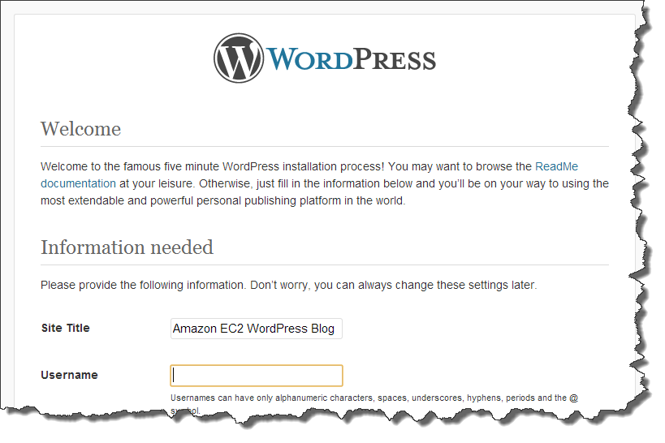

Tutorial: Hosting a WordPress Blog with Amazon Linux
The following procedures will help you install, configure, and secure a WordPress blog on your Amazon Linux instance. This tutorial is a good introduction to using Amazon EC2 in that you have full control over a web server that hosts your WordPress blog, which is not typical with a traditional hosting service.
You are responsible for updating the software packages and maintaining security patches for your server. For a more automated WordPress installation that does not require direct interaction with the web server configuration, the AWS CloudFormation service provides a WordPress template that can also get you started quickly. For more information, see Getting Started in the AWS CloudFormation User Guide. If you'd prefer to host your WordPress blog on a Windows instance, see Deploying a WordPress Blog on Your Amazon EC2 Windows Instance in the Amazon EC2 User Guide for Windows Instances. If you need a high-availability solution with a decoupled database, see Deploying a High-Availability WordPress Website in the AWS Elastic Beanstalk Developer Guide.
Important
These procedures are intended for use with Amazon Linux. For more information about other distributions, see their specific documentation. Many steps in this tutorial do not work on Ubuntu instances. For help installing WordPress on an Ubuntu instance, see WordPress in the Ubuntu documentation.
Prerequisites
This tutorial assumes that you have launched an Amazon Linux instance with a functional
web
server with PHP and database (either MySQL or MariaDB) support by following all of
the
steps in Tutorial: Install a LAMP Web Server with the Amazon Linux AMI for Amazon Linux AMI or
Tutorial: Install a LAMP Web Server on Amazon Linux 2
for Amazon Linux 2. This tutorial also has steps for configuring a security group
to allow
HTTP and HTTPS traffic, as well as several steps to ensure
that file permissions are set properly for your web server. For information about
adding
rules to your security group, see Adding Rules to a Security Group.
We strongly recommend that you associate an Elastic IP address (EIP) to the instance you are using to host a WordPress blog. This prevents the public DNS address for your instance from changing and breaking your installation. If you own a domain name and you want to use it for your blog, you can update the DNS record for the domain name to point to your EIP address (for help with this, contact your domain name registrar). You can have one EIP address associated with a running instance at no charge. For more information, see Elastic IP Addresses.
If you don't already have a domain name for your blog, you can register a domain name with Route 53 and associate your instance's EIP address with your domain name. For more information, see Registering Domain Names Using Amazon Route 53 in the Amazon Route 53 Developer Guide.
Install WordPress
Connect to your instance, and download the WordPress installation package.
To download and unzip the WordPress installation package
-
Download the latest WordPress installation package with the wget command. The following command should always download the latest release.
[ec2-user ~]$wget https://wordpress.org/latest.tar.gz -
Unzip and unarchive the installation package. The installation folder is unzipped to a folder called
wordpress.[ec2-user ~]$tar -xzf latest.tar.gz
To create a database user and database for your WordPress installation
Your WordPress installation needs to store information, such as blog posts and user comments, in a database. This procedure helps you create your blog's database and a user that is authorized to read and save information to it.
-
Start the database server.
-
Amazon Linux AMI:
sudo service mysqld start -
Amazon Linux 2:
sudo systemctl start mariadb
-
-
Log in to the database server as the
rootuser. Enter your databaserootpassword when prompted; this may be different than yourrootsystem password, or it may even be empty if you have not secured your database server.Important
If you have not secured your database server yet, it is very important that you do so. For more information, see To secure the database server.
[ec2-user ~]$mysql -u root -p -
Create a user and password for your MySQL database. Your WordPress installation uses these values to communicate with your MySQL database. Enter the following command, substituting a unique user name and password.
CREATE USER 'wordpress-user'@'localhost' IDENTIFIED BY 'your_strong_password';Make sure that you create a strong password for your user. Do not use the single quote character ( ' ) in your password, because this will break the preceding command. For more information about creating a secure password, go to http://www.pctools.com/guides/password/. Do not reuse an existing password, and make sure to store this password in a safe place.
-
Create your database. Give your database a descriptive, meaningful name, such as
wordpress-db.Note
The punctuation marks surrounding the database name in the command below are called backticks. The backtick (
`) key is usually located above theTabkey on a standard keyboard. Backticks are not always required, but they allow you to use otherwise illegal characters, such as hyphens, in database names.CREATE DATABASE `wordpress-db`; -
Grant full privileges for your database to the WordPress user that you created earlier.
GRANT ALL PRIVILEGES ON `wordpress-db`.* TO "wordpress-user"@"localhost"; -
Flush the database privileges to pick up all of your changes.
FLUSH PRIVILEGES; -
Exit the
mysqlclient.exit
To create and edit the wp-config.php file
The WordPress installation folder contains a sample configuration file called
wp-config-sample.php. In this procedure, you copy this file
and edit it to fit your specific configuration.
-
Copy the
wp-config-sample.phpfile to a file calledwp-config.php. This creates a new configuration file and keeps the original sample file intact as a backup.[ec2-user ~]$cp wordpress/wp-config-sample.php wordpress/wp-config.php -
Edit the
wp-config.phpfile with your favorite text editor (such as nano or vim) and enter values for your installation. If you do not have a favorite text editor,nanois suitable for beginners.[ec2-user ~]$nano wordpress/wp-config.php-
Find the line that defines
DB_NAMEand changedatabase_name_hereto the database name that you created in Step 4 of To create a database user and database for your WordPress installation.define('DB_NAME', 'wordpress-db'); -
Find the line that defines
DB_USERand changeusername_hereto the database user that you created in Step 3 of To create a database user and database for your WordPress installation.define('DB_USER', 'wordpress-user'); -
Find the line that defines
DB_PASSWORDand changepassword_hereto the strong password that you created in Step 3 of To create a database user and database for your WordPress installation.define('DB_PASSWORD', 'your_strong_password'); -
Find the section called
Authentication Unique Keys and Salts. TheseKEYandSALTvalues provide a layer of encryption to the browser cookies that WordPress users store on their local machines. Basically, adding long, random values here makes your site more secure. Visit https://api.wordpress.org/secret-key/1.1/salt/ to randomly generate a set of key values that you can copy and paste into yourwp-config.phpfile. To paste text into a PuTTY terminal, place the cursor where you want to paste the text and right-click your mouse inside the PuTTY terminal.For more information about security keys, go to http://codex.wordpress.org/Editing_wp-config.php#Security_Keys.
Note
The values below are for example purposes only; do not use these values for your installation.
define('AUTH_KEY', '#U$$+[RXN8:b^-L 0(WU_+ c+WFkI~c]o]-bHw+)/Aj[wTwSiZ<Qb[mghEXcRh-'); define('SECURE_AUTH_KEY', 'Zsz._P=l/|y.Lq)XjlkwS1y5NJ76E6EJ.AV0pCKZZB,*~*r ?6OP$eJT@;+(ndLg'); define('LOGGED_IN_KEY', 'ju}qwre3V*+8f_zOWf?{LlGsQ]Ye@2Jh^,8x>)Y |;(^[Iw]Pi+LG#A4R?7N`YB3'); define('NONCE_KEY', 'P(g62HeZxEes|LnI^i=H,[XwK9I&[2s|:?0N}VJM%?;v2v]v+;+^9eXUahg@::Cj'); define('AUTH_SALT', 'C$DpB4Hj[JK:?{ql`sRVa:{:7yShy(9A@5wg+`JJVb1fk%_-Bx*M4(qc[Qg%JT!h'); define('SECURE_AUTH_SALT', 'd!uRu#}+q#{f$Z?Z9uFPG.${+S{n~1M&%@~gL>U>NV<zpD-@2-Es7Q1O-bp28EKv'); define('LOGGED_IN_SALT', ';j{00P*owZf)kVD+FVLn-~ >.|Y%Ug4#I^*LVd9QeZ^&XmK|e(76miC+&W&+^0P/'); define('NONCE_SALT', '-97r*V/cgxLmp?Zy4zUU4r99QQ_rGs2LTd%P;|_e1tS)8_B/,.6[=UK<J_y9?JWG'); -
Save the file and exit your text editor.
-
To install your WordPress files under the Apache document root
-
Now that you've unzipped the installation folder, created a MySQL database and user, and customized the WordPress configuration file, you are ready to copy your installation files to your web server document root so you can run the installation script that completes your installation. The location of these files depends on whether you want your WordPress blog to be available at the actual root of your web server (for example,
my.public.dns.amazonaws.commy.public.dns.amazonaws.com/blog -
If you want WordPress to run at your document root, copy the contents of the wordpress installation directory (but not the directory itself) as follows:
[ec2-user ~]$cp -r wordpress/* /var/www/html/ -
If you want WordPress to run in an alternative directory under the document root, first create that directory, and then copy the files to it. In this example, WordPress will run from the directory
blog:[ec2-user ~]$mkdir /var/www/html/blog[ec2-user ~]$cp -r wordpress/* /var/www/html/blog/
Important
For security purposes, if you are not moving on to the next procedure immediately,
stop the Apache web server (httpd) now. After you move your
installation under the Apache document root, the WordPress installation script is
unprotected and an attacker could gain access to your blog if the Apache web server
were running. To stop the Apache web server, enter the command sudo service
httpd stop. If you are moving on to the next procedure, you do not
need to stop the Apache web server.
To allow WordPress to use permalinks
WordPress permalinks need to use Apache .htaccess files to
work properly, but this is not enabled by default on Amazon Linux. Use this
procedure to allow all overrides in the Apache document root.
-
Open the
httpd.conffile with your favorite text editor (such as nano or vim). If you do not have a favorite text editor,nanois suitable for beginners.[ec2-user ~]$sudo vim /etc/httpd/conf/httpd.conf -
Find the section that starts with
<Directory "/var/www/html">.<Directory "/var/www/html"> # # Possible values for the Options directive are "None", "All", # or any combination of: # Indexes Includes FollowSymLinks SymLinksifOwnerMatch ExecCGI MultiViews # # Note that "MultiViews" must be named *explicitly* --- "Options All" # doesn't give it to you. # # The Options directive is both complicated and important. Please see # http://httpd.apache.org/docs/2.4/mod/core.html#options # for more information. # Options Indexes FollowSymLinks # # AllowOverride controls what directives may be placed in .htaccess files. # It can be "All", "None", or any combination of the keywords: # Options FileInfo AuthConfig Limit # AllowOverrideNone# # Controls who can get stuff from this server. # Require all granted </Directory> -
Change the
AllowOverride Noneline in the above section to readAllowOverride.AllNote
There are multiple
AllowOverridelines in this file; be sure you change the line in the<Directory "/var/www/html">section.AllowOverrideAll -
Save the file and exit your text editor.
To fix file permissions for the Apache web server
Some of the available features in WordPress require write access to the Apache document root (such as uploading media though the Administration screens). If you have not already done so, apply the following group memberships and permissions (as described in greater detail in the LAMP web server tutorial).
-
Grant file ownership of
/var/wwwand its contents to theapacheuser.[ec2-user ~]$sudo chown -R apache /var/www -
Grant group ownership of
/var/wwwand its contents to theapachegroup.[ec2-user ~]$sudo chgrp -R apache /var/www -
Change the directory permissions of
/var/wwwand its subdirectories to add group write permissions and to set the group ID on future subdirectories.[ec2-user ~]$sudo chmod 2775 /var/www -
Recursively change the file permissions of
/var/wwwand its subdirectories to add group write permissions.[ec2-user ~]$find /var/www -type d -exec sudo chmod 2775 {} \; -
Restart the Apache web server to pick up the new group and permissions.
-
Amazon Linux AMI:
sudo service httpd restart -
Amazon Linux 2:
sudo systemctl restart httpd
-
To run the WordPress installation script
-
Use the chkconfig command to ensure that the
httpdand database services start at every system boot.-
Amazon Linux AMI:
sudo chkconfig enable httpd && sudo chkconfig enable mysql -
Amazon Linux 2:
sudo systemctl enable httpd && sudo systemctl enable mariadb
-
-
Verify that the database server is running.
-
Amazon Linux AMI:
sudo service mysqld status -
Amazon Linux 2:
sudo systemctl status mariadb
If the database service is not running, start it.
-
Amazon Linux AMI:
sudo service mysqld start -
Amazon Linux 2:
sudo systemctl start mariadb
-
-
Verify that your Apache web server (
httpd) is running.-
Amazon Linux AMI:
sudo service httpd status -
Amazon Linux 2:
sudo systemctl status httpd
If the
httpdservice is not running, start it.-
Amazon Linux AMI:
sudo service httpd start -
Amazon Linux 2:
sudo systemctl start httpd
-
-
In a web browser, enter the URL of your WordPress blog (either the public DNS address for your instance, or that address followed by the
blogfolder). You should see the WordPress installation screen.http://my.public.dns.amazonaws.com -
Enter the remaining installation information into the WordPress installation wizard.
Field Value Site Title Enter a name for your WordPress site. Username Enter a name for your WordPress administrator. For security purposes, you should choose a unique name for this user, because it will be more difficult to exploit than the default user name, admin.Password Enter a strong password, and then enter it again to confirm. Do not reuse an existing password, and make sure to store this password in a safe place. Your E-mail Enter the email address you want to use for notifications. -
Click Install WordPress to complete the installation.
Congratulations, you should now be able to log into your WordPress blog and start posting entries.
Next Steps
After you have tested your initial WordPress blog, consider updating its configuration.
Use a Custom Domain Name
If you have a domain name associated with your EC2 instance's EIP address, you can configure your blog to use that name instead of the EC2 public DNS address. For more information, see http://codex.wordpress.org/Changing_The_Site_URL.
Configure Your Blog
You can configure your blog to use different themes and plugins to offer a more personalized experience for your readers. However, sometimes the installation process can backfire, causing you to lose your entire blog. We strongly recommend that you create a backup Amazon Machine Image (AMI) of your instance before attempting to install any themes or plugins so you can restore your blog if anything goes wrong during installation. For more information, see Creating Your Own AMI.
Increase Capacity
If your WordPress blog becomes popular and you need more compute power or storage, consider the following steps:
-
Expand the storage space on your instance. For more information, see Modifying the Size, IOPS, or Type of an EBS Volume on Linux.
-
Move your MySQL database to Amazon RDS to take advantage of the service's ability to scale easily.
-
Migrate to a larger instance type. For more information, see Changing the Instance Type.
-
Add additional instances. For more information, see Tutorial: Increase the Availability of Your Application on Amazon EC2.
Learn More about WordPress
For information about WordPress, see the WordPress Codex help documentation at http://codex.wordpress.org/. For more information about troubleshooting your installation, go to http://codex.wordpress.org/Installing_WordPress#Common_Installation_Problems. For information about making your WordPress blog more secure, go to http://codex.wordpress.org/Hardening_WordPress. For information about keeping your WordPress blog up-to-date, go to http://codex.wordpress.org/Updating_WordPress.
Help! My Public DNS Name Changed and now my Blog is Broken
Your WordPress installation is automatically configured using the public DNS address for your EC2 instance. If you stop and restart the instance, the public DNS address changes (unless it is associated with an Elastic IP address) and your blog will not work anymore because it references resources at an address that no longer exists (or is assigned to another EC2 instance). A more detailed description of the problem and several possible solutions are outlined in http://codex.wordpress.org/Changing_The_Site_URL.
If this has happened to your WordPress installation, you may be able to recover your blog with the procedure below, which uses the wp-cli command line interface for WordPress.
To change your WordPress site URL with the wp-cli
-
Connect to your EC2 instance with SSH.
-
Note the old site URL and the new site URL for your instance. The old site URL is likely the public DNS name for your EC2 instance when you installed WordPress. The new site URL is the current public DNS name for your EC2 instance. If you are not sure of your old site URL, you can use curl to find it with the following command.
[ec2-user ~]$curl localhost | grep wp-contentYou should see references to your old public DNS name in the output, which will look like this (old site URL in red):
<script type='text/javascript' src='http://ec2-52-8-139-223.us-west-1.compute.amazonaws.com/wp-content/themes/twentyfifteen/js/functions.js?ver=20150330'></script> -
Download the wp-cli with the following command.
[ec2-user ~]$curl -O https://raw.githubusercontent.com/wp-cli/builds/gh-pages/phar/wp-cli.phar -
Search and replace the old site URL in your WordPress installation with the following command. Substitute the old and new site URLs for your EC2 instance and the path to your WordPress installation (usually
/var/www/htmlor/var/www/html/blog).[ec2-user ~]$php wp-cli.phar search-replace 'old_site_url' 'new_site_url' --path=/path/to/wordpress/installation--skip-columns=guid -
In a web browser, enter the new site URL of your WordPress blog to verify that the site is working properly again. If it is not, see http://codex.wordpress.org/Changing_The_Site_URL and http://codex.wordpress.org/Installing_WordPress#Common_Installation_Problems for more information.